R para Ciência de Dados
Uma introdução ao tidyverse
Quem sou eu?

Me chamo Ítallo!
Atualmente sou mestrando em Computação aqui na UFCG!
Minha linha de pesquisa é na área de Sistemas de Recomendação e LLMs.
Trabalho com análise de dados e aprendizagem de máquina desde 2020.
Você pode entrar em contato via itallo@copin.ufcg.edu.br
Relembrando nosso título
R para Ciência de Dados
Uma introdução ao tidyverse
R para Ciência de Dados
Uma introdução ao tidyverse
R
É uma linguagem de programação para análise estatística.
7ª linguagem de programação mais popular em buscas no Google1.
2ª linguagem de programação mais requisitada em vagas de Ciência de Dados2.
Ciência de dados
Ciência de dados é uma área interdisciplinar (estatística, computação, etc.) que permite transformar dados brutos em compreensão, percepção e conhecimento.
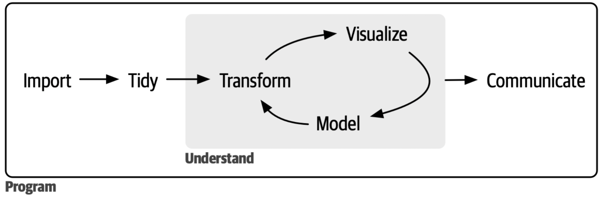
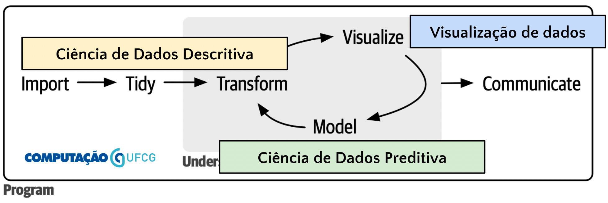
Tidyverse
É uma coleção de pacotes R desenvolvidos para ciência de dados.

Tidyverse
É uma coleção de pacotes R desenvolvidos para ciência de dados.
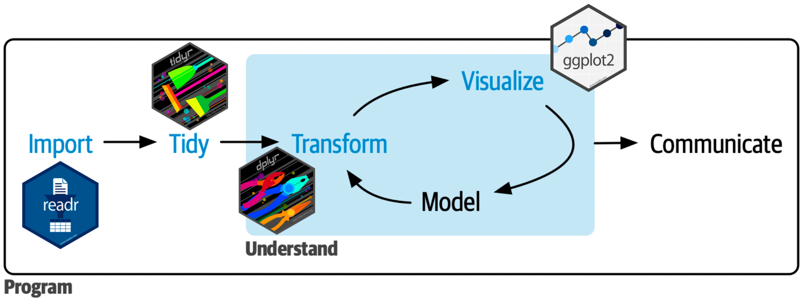
Como vai funcionar nosso workshop?
Momento expositivo I - Leitura e processamento de dados (readr, tidyr, dplyr)
Momento prático I
Momento expositivo II - Visualização de dados (ggplot)
Momento prático II
Leitura e processamento de dados
Momento expositivo I
Leitura de dados com readr
readr
- Oferece uma forma rápida e fácil de ler dados tabulares de arquivos delimitados (CSV, TSV, etc).
- Isso pode ser feito através da família de funções
read_*. A seguir vemos o uso da funçãoread_csv.
- Além da função
read_csv, a biblioteca oferece ainda:read_delim,read_csv2,read_tsv,read_logeread_fwf.
readr
As funções read_* compartilham alguns parâmetros entre si que merecem destaque:
- file
- col_names
- col_types
- col_select
- na
- skip
readr
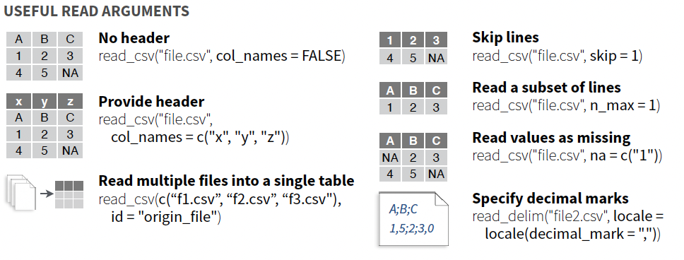readr - col_types
Por padrão, as funções read_* irão tentar inferir o tipo do dado de cada coluna, usando o seguinte algoritmo:
- A coluna contém zero linhas? character.
- Todos os valores estão ausentes? logical.
- Tente realizar parsing para os seguintes tipos e retorne o primeiro que tiver sucesso:
- logical
- integer
- double
- number
- time
- date
- datetime
- character
É sempre bom especificar os tipos esperados usando o parâmetro col_types. Pois vai deixar a leitura mais rápida e mais segura.
readr - col_types
library(readr)
data <- read_csv("data/students.csv",
col_types = list(
`Student ID` = col_integer(),
`Full Name` = col_character(),
favourite.food = col_character(),
mealPlan = col_factor(),
AGE = col_integer(),
height = col_double()
))
data# A tibble: 6 × 6
`Student ID` `Full Name` favourite.food mealPlan AGE height
<int> <chr> <chr> <fct> <int> <dbl>
1 1 Sunil Huffmann Strawberry yoghurt Lunch only 4 1.64
2 2 Barclay Lynn French fries Lunch only 5 1.93
3 3 Jayendra Lyne N/A Breakfast and l… 7 1.72
4 4 Leon Rossini Anchovies Lunch only NA 1.9
5 5 Chidiegwu Dunkel Pizza Breakfast and l… NA 1.63
6 6 Güvenç Attila Ice cream Lunch only 6 1.71readr - col_types
library(readr)
data <- read_csv("data/students.csv",
col_types = list(
`Student ID` = col_integer(),
`Full Name` = col_character(),
favourite.food = col_character(),
mealPlan = col_factor(),
AGE = col_integer(),
height = col_double()
))Warning: One or more parsing issues, call `problems()` on your data frame for details,
e.g.:
dat <- vroom(...)
problems(dat)Algumas vezes podemos encontrar problemas de conversão ao lermos os dados:
tibble
As funções read_* retornam um tipo especial de dado chamado tibble. As funções do tidyverse manipulam tibbles.
data <- read_csv("data/students.csv",
col_names = c("student_id", "full_name", "favourite_food",
"meal_plan", "age", "height"),
na = c("", "NA", "N/A"),
skip = 1,
col_types = list(
student_id = col_integer(),
full_name = col_character(),
favourite_food = col_character(),
meal_plan = col_factor(),
age = col_integer(),
height = col_double()
))
data# A tibble: 6 × 6
student_id full_name favourite_food meal_plan age height
<int> <chr> <chr> <fct> <int> <dbl>
1 1 Sunil Huffmann Strawberry yoghurt Lunch only 4 1.64
2 2 Barclay Lynn French fries Lunch only 5 1.93
3 3 Jayendra Lyne <NA> Breakfast and lun… 7 1.72
4 4 Leon Rossini Anchovies Lunch only NA 1.9
5 5 Chidiegwu Dunkel Pizza Breakfast and lun… NA 1.63
6 6 Güvenç Attila Ice cream Lunch only 6 1.71Organizando dados com tidyr
tidyr
O objetivo do tidyr é ajudá-lo a criar tidy data. tidy data são dados onde:
- Cada coluna é variável.
- Cada linha é uma observação.
- Cada célula é um valor único.
tidy data descrevem uma maneira padrão de armazenar dados que é usada sempre que possível em todo o tidyverse. Vejamos alguns exemplos de dados.
Caso 1: É tidy data?
# A tibble: 12 × 4
country year type count
<chr> <dbl> <chr> <dbl>
1 Afghanistan 1999 cases 745
2 Afghanistan 1999 population 19987071
3 Afghanistan 2000 cases 2666
4 Afghanistan 2000 population 20595360
5 Brazil 1999 cases 37737
6 Brazil 1999 population 172006362
7 Brazil 2000 cases 80488
8 Brazil 2000 population 174504898
9 China 1999 cases 212258
10 China 1999 population 1272915272
11 China 2000 cases 213766
12 China 2000 population 1280428583Não! A coluna type tem duas variáveis cases e population.
Caso 2: É tidy data?
# A tibble: 6 × 4
country century year rate
<chr> <chr> <chr> <chr>
1 Afghanistan 19 99 745/19987071
2 Afghanistan 20 00 2666/20595360
3 Brazil 19 99 37737/172006362
4 Brazil 20 00 80488/174504898
5 China 19 99 212258/1272915272
6 China 20 00 213766/1280428583Não! As células da coluna rate tem dois valores: cases e population.
Caso 3: É tidy data?
# A tibble: 3 × 5
country `1999.cases` `2000.cases` `1999.population` `2000.population`
<chr> <dbl> <dbl> <dbl> <dbl>
1 Afghanistan 745 2666 19987071 20595360
2 Brazil 37737 80488 172006362 174504898
3 China 212258 213766 1272915272 1280428583Não! A variável ano está espalhada pelas colunas.
Caso 4: É tidy data?
# A tibble: 6 × 4
country year cases population
<chr> <dbl> <dbl> <dbl>
1 Afghanistan 1999 745 19987071
2 Afghanistan 2000 2666 20595360
3 Brazil 1999 37737 172006362
4 Brazil 2000 80488 174504898
5 China 1999 212258 1272915272
6 China 2000 213766 1280428583Sim. Vamos ver como podemos transformar os outros casos em tidy data.
Tratando do caso 1
# A tibble: 12 × 4
country year type count
<chr> <dbl> <chr> <dbl>
1 Afghanistan 1999 cases 745
2 Afghanistan 1999 population 19987071
3 Afghanistan 2000 cases 2666
4 Afghanistan 2000 population 20595360
5 Brazil 1999 cases 37737
6 Brazil 1999 population 172006362
7 Brazil 2000 cases 80488
8 Brazil 2000 population 174504898
9 China 1999 cases 212258
10 China 1999 population 1272915272
11 China 2000 cases 213766
12 China 2000 population 1280428583O que precisamos fazer aqui?
Precisamos criar colunas para as variáveis cases e population, com os respectivos valores da coluna count. Para isso usaremos uma operação chamada pivot_wider.
Tratando do caso 1 - Solução
# A tibble: 6 × 4
country year cases population
<chr> <dbl> <dbl> <dbl>
1 Afghanistan 1999 745 19987071
2 Afghanistan 2000 2666 20595360
3 Brazil 1999 37737 172006362
4 Brazil 2000 80488 174504898
5 China 1999 212258 1272915272
6 China 2000 213766 1280428583Tratando do caso 2
# A tibble: 6 × 4
country century year rate
<chr> <chr> <chr> <chr>
1 Afghanistan 19 99 745/19987071
2 Afghanistan 20 00 2666/20595360
3 Brazil 19 99 37737/172006362
4 Brazil 20 00 80488/174504898
5 China 19 99 212258/1272915272
6 China 20 00 213766/1280428583O que precisamos fazer aqui?
Precisamos separar a coluna rate em duas: cases e population. E unir o século com o ano, para termos um ano completo. Para isso usaremos uma operação chamada separate e unite, respectivamente.
Tratando do caso 2 - Solução
Como nossa intenção é separar em novas colunas usaremos separate_wider, caso quisessemos separar em novas linhas poderiamos usar separate_longer.
# A tibble: 6 × 5
country century year cases population
<chr> <chr> <chr> <chr> <chr>
1 Afghanistan 19 99 745 19987071
2 Afghanistan 20 00 2666 20595360
3 Brazil 19 99 37737 172006362
4 Brazil 20 00 80488 174504898
5 China 19 99 212258 1272915272
6 China 20 00 213766 1280428583Tratando do caso 2 - Solução
table5 |>
separate_wider_delim(
cols = rate,
delim = "/",
names = c("cases", "population")
) |>
unite(century, year, sep = "", col = "year")# A tibble: 6 × 4
country year cases population
<chr> <chr> <chr> <chr>
1 Afghanistan 1999 745 19987071
2 Afghanistan 2000 2666 20595360
3 Brazil 1999 37737 172006362
4 Brazil 2000 80488 174504898
5 China 1999 212258 1272915272
6 China 2000 213766 1280428583Tratando do caso 3
# A tibble: 3 × 5
country `1999.cases` `2000.cases` `1999.population` `2000.population`
<chr> <dbl> <dbl> <dbl> <dbl>
1 Afghanistan 745 2666 19987071 20595360
2 Brazil 37737 80488 172006362 174504898
3 China 212258 213766 1272915272 1280428583O que precisamos fazer aqui?
Primeiramente precisamos ‘enxugar’ o dado, transformando as quatro colunas em duas. Para isso usaremos uma operação chamada pivot_longer.
Tratando do caso 3 - Solução
# A tibble: 12 × 3
country name value
<chr> <chr> <dbl>
1 Afghanistan 1999.cases 745
2 Afghanistan 2000.cases 2666
3 Afghanistan 1999.population 19987071
4 Afghanistan 2000.population 20595360
5 Brazil 1999.cases 37737
6 Brazil 2000.cases 80488
7 Brazil 1999.population 172006362
8 Brazil 2000.population 174504898
9 China 1999.cases 212258
10 China 2000.cases 213766
11 China 1999.population 1272915272
12 China 2000.population 1280428583Acabamos?
Não. Precisamos agora extrair o ano. Para isso usaremos mais uma vez separate_wider.
Tratando do caso 3 - Solução
table4 |>
pivot_longer(cols = 2:5) |>
separate_wider_delim(cols = name,
delim = ".",
names = c("year", "type"))# A tibble: 12 × 4
country year type value
<chr> <chr> <chr> <dbl>
1 Afghanistan 1999 cases 745
2 Afghanistan 2000 cases 2666
3 Afghanistan 1999 population 19987071
4 Afghanistan 2000 population 20595360
5 Brazil 1999 cases 37737
6 Brazil 2000 cases 80488
7 Brazil 1999 population 172006362
8 Brazil 2000 population 174504898
9 China 1999 cases 212258
10 China 2000 cases 213766
11 China 1999 population 1272915272
12 China 2000 population 1280428583Acabamos?
Não. Voltamos ao caso 1. Então usaremos mais uma vez pivot_wider.
Tratando do caso 4 - Solução
table4 |>
pivot_longer(cols = 2:5) |>
separate_wider_delim(cols = name,
delim = ".",
names = c("year", "type")) |>
pivot_wider(names_from = type, values_from = value)# A tibble: 6 × 4
country year cases population
<chr> <chr> <dbl> <dbl>
1 Afghanistan 1999 745 19987071
2 Afghanistan 2000 2666 20595360
3 Brazil 1999 37737 172006362
4 Brazil 2000 80488 174504898
5 China 1999 212258 1272915272
6 China 2000 213766 1280428583Lidando com dados faltantes
tidyr também oferece funções para lidar com dados faltantes.
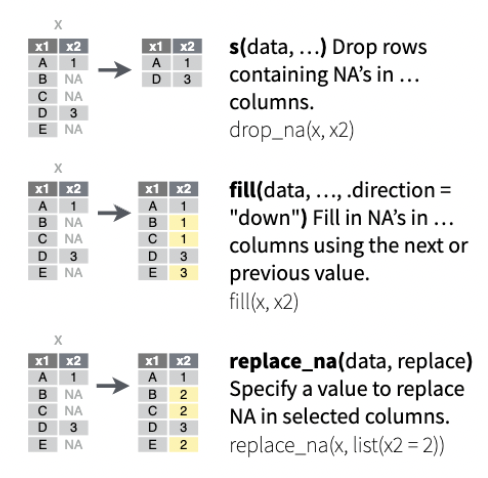Transformando dados com dplyr
dplyr
dplyr é uma gramática de manipulação de dados, fornecendo um conjunto consistente de verbos que ajudam a resolver os desafios mais comuns de manipulação de dados:
select: escolhe variáveis com base em seus nomes.rename: permite mudar o nome das variáveis.mutate: adiciona novas variáveis que são funções de variáveis existentes.filter: escolhe casos com base em seus valores.arrange: altera a ordem das linhas.summarise: reduz vários valores a um único resumo.group_by: permite realizar qualquer operação “por grupo”.- Além disso ela também fornece operações de
join, porém não iremos trabalhar com elas nesse workshop.
mtcars
Para os exemplos a seguir utilizaremos o seguinte conjunto de dados.
mpg cyl disp hp drat wt qsec vs am gear carb
Mazda RX4 21.0 6 160 110 3.90 2.620 16.46 0 1 4 4
Mazda RX4 Wag 21.0 6 160 110 3.90 2.875 17.02 0 1 4 4
Datsun 710 22.8 4 108 93 3.85 2.320 18.61 1 1 4 1
Hornet 4 Drive 21.4 6 258 110 3.08 3.215 19.44 1 0 3 1
Hornet Sportabout 18.7 8 360 175 3.15 3.440 17.02 0 0 3 2
Valiant 18.1 6 225 105 2.76 3.460 20.22 1 0 3 1Um dataset com 32 observações em 11 variáveis numéricas.
- mpg milhas/galão (EUA)
- cyl Número de cilindros
- disp Deslocamento (pol. cúbicas)
- hp Potência bruta
- drat Relação do eixo traseiro
- wt Peso (1000 libras)
- qsec 1/4 milha tempo
- vs Motor (0 = em forma de V, 1 = reto)
- am Transmissão (0 = automática, 1 = manual)
- gear Número de marchas
- carb Número de carburadores
select
mpg wt
Mazda RX4 21.0 2.620
Mazda RX4 Wag 21.0 2.875
Datsun 710 22.8 2.320
Hornet 4 Drive 21.4 3.215
Hornet Sportabout 18.7 3.440
Valiant 18.1 3.460
Duster 360 14.3 3.570
Merc 240D 24.4 3.190
Merc 230 22.8 3.150
Merc 280 19.2 3.440
Merc 280C 17.8 3.440
Merc 450SE 16.4 4.070
Merc 450SL 17.3 3.730
Merc 450SLC 15.2 3.780
Cadillac Fleetwood 10.4 5.250
Lincoln Continental 10.4 5.424
Chrysler Imperial 14.7 5.345
Fiat 128 32.4 2.200
Honda Civic 30.4 1.615
Toyota Corolla 33.9 1.835
Toyota Corona 21.5 2.465
Dodge Challenger 15.5 3.520
AMC Javelin 15.2 3.435
Camaro Z28 13.3 3.840
Pontiac Firebird 19.2 3.845
Fiat X1-9 27.3 1.935
Porsche 914-2 26.0 2.140
Lotus Europa 30.4 1.513
Ford Pantera L 15.8 3.170
Ferrari Dino 19.7 2.770
Maserati Bora 15.0 3.570
Volvo 142E 21.4 2.780rename
milhas_por_galao cyl disp hp drat wt qsec vs am gear
Mazda RX4 21.0 6 160.0 110 3.90 2.620 16.46 0 1 4
Mazda RX4 Wag 21.0 6 160.0 110 3.90 2.875 17.02 0 1 4
Datsun 710 22.8 4 108.0 93 3.85 2.320 18.61 1 1 4
Hornet 4 Drive 21.4 6 258.0 110 3.08 3.215 19.44 1 0 3
Hornet Sportabout 18.7 8 360.0 175 3.15 3.440 17.02 0 0 3
Valiant 18.1 6 225.0 105 2.76 3.460 20.22 1 0 3
Duster 360 14.3 8 360.0 245 3.21 3.570 15.84 0 0 3
Merc 240D 24.4 4 146.7 62 3.69 3.190 20.00 1 0 4
Merc 230 22.8 4 140.8 95 3.92 3.150 22.90 1 0 4
Merc 280 19.2 6 167.6 123 3.92 3.440 18.30 1 0 4
Merc 280C 17.8 6 167.6 123 3.92 3.440 18.90 1 0 4
Merc 450SE 16.4 8 275.8 180 3.07 4.070 17.40 0 0 3
Merc 450SL 17.3 8 275.8 180 3.07 3.730 17.60 0 0 3
Merc 450SLC 15.2 8 275.8 180 3.07 3.780 18.00 0 0 3
Cadillac Fleetwood 10.4 8 472.0 205 2.93 5.250 17.98 0 0 3
Lincoln Continental 10.4 8 460.0 215 3.00 5.424 17.82 0 0 3
Chrysler Imperial 14.7 8 440.0 230 3.23 5.345 17.42 0 0 3
Fiat 128 32.4 4 78.7 66 4.08 2.200 19.47 1 1 4
Honda Civic 30.4 4 75.7 52 4.93 1.615 18.52 1 1 4
Toyota Corolla 33.9 4 71.1 65 4.22 1.835 19.90 1 1 4
Toyota Corona 21.5 4 120.1 97 3.70 2.465 20.01 1 0 3
Dodge Challenger 15.5 8 318.0 150 2.76 3.520 16.87 0 0 3
AMC Javelin 15.2 8 304.0 150 3.15 3.435 17.30 0 0 3
Camaro Z28 13.3 8 350.0 245 3.73 3.840 15.41 0 0 3
Pontiac Firebird 19.2 8 400.0 175 3.08 3.845 17.05 0 0 3
Fiat X1-9 27.3 4 79.0 66 4.08 1.935 18.90 1 1 4
Porsche 914-2 26.0 4 120.3 91 4.43 2.140 16.70 0 1 5
Lotus Europa 30.4 4 95.1 113 3.77 1.513 16.90 1 1 5
Ford Pantera L 15.8 8 351.0 264 4.22 3.170 14.50 0 1 5
Ferrari Dino 19.7 6 145.0 175 3.62 2.770 15.50 0 1 5
Maserati Bora 15.0 8 301.0 335 3.54 3.570 14.60 0 1 5
Volvo 142E 21.4 4 121.0 109 4.11 2.780 18.60 1 1 4
carb
Mazda RX4 4
Mazda RX4 Wag 4
Datsun 710 1
Hornet 4 Drive 1
Hornet Sportabout 2
Valiant 1
Duster 360 4
Merc 240D 2
Merc 230 2
Merc 280 4
Merc 280C 4
Merc 450SE 3
Merc 450SL 3
Merc 450SLC 3
Cadillac Fleetwood 4
Lincoln Continental 4
Chrysler Imperial 4
Fiat 128 1
Honda Civic 2
Toyota Corolla 1
Toyota Corona 1
Dodge Challenger 2
AMC Javelin 2
Camaro Z28 4
Pontiac Firebird 2
Fiat X1-9 1
Porsche 914-2 2
Lotus Europa 2
Ford Pantera L 4
Ferrari Dino 6
Maserati Bora 8
Volvo 142E 2mutate
mpg cyl disp hp drat wt qsec vs am gear carb
Mazda RX4 21.0 6 160.0 110 3.90 2.620 16.46 0 manual 4 4
Mazda RX4 Wag 21.0 6 160.0 110 3.90 2.875 17.02 0 manual 4 4
Datsun 710 22.8 4 108.0 93 3.85 2.320 18.61 1 manual 4 1
Hornet 4 Drive 21.4 6 258.0 110 3.08 3.215 19.44 1 automatic 3 1
Hornet Sportabout 18.7 8 360.0 175 3.15 3.440 17.02 0 automatic 3 2
Valiant 18.1 6 225.0 105 2.76 3.460 20.22 1 automatic 3 1
Duster 360 14.3 8 360.0 245 3.21 3.570 15.84 0 automatic 3 4
Merc 240D 24.4 4 146.7 62 3.69 3.190 20.00 1 automatic 4 2
Merc 230 22.8 4 140.8 95 3.92 3.150 22.90 1 automatic 4 2
Merc 280 19.2 6 167.6 123 3.92 3.440 18.30 1 automatic 4 4
Merc 280C 17.8 6 167.6 123 3.92 3.440 18.90 1 automatic 4 4
Merc 450SE 16.4 8 275.8 180 3.07 4.070 17.40 0 automatic 3 3
Merc 450SL 17.3 8 275.8 180 3.07 3.730 17.60 0 automatic 3 3
Merc 450SLC 15.2 8 275.8 180 3.07 3.780 18.00 0 automatic 3 3
Cadillac Fleetwood 10.4 8 472.0 205 2.93 5.250 17.98 0 automatic 3 4
Lincoln Continental 10.4 8 460.0 215 3.00 5.424 17.82 0 automatic 3 4
Chrysler Imperial 14.7 8 440.0 230 3.23 5.345 17.42 0 automatic 3 4
Fiat 128 32.4 4 78.7 66 4.08 2.200 19.47 1 manual 4 1
Honda Civic 30.4 4 75.7 52 4.93 1.615 18.52 1 manual 4 2
Toyota Corolla 33.9 4 71.1 65 4.22 1.835 19.90 1 manual 4 1
Toyota Corona 21.5 4 120.1 97 3.70 2.465 20.01 1 automatic 3 1
Dodge Challenger 15.5 8 318.0 150 2.76 3.520 16.87 0 automatic 3 2
AMC Javelin 15.2 8 304.0 150 3.15 3.435 17.30 0 automatic 3 2
Camaro Z28 13.3 8 350.0 245 3.73 3.840 15.41 0 automatic 3 4
Pontiac Firebird 19.2 8 400.0 175 3.08 3.845 17.05 0 automatic 3 2
Fiat X1-9 27.3 4 79.0 66 4.08 1.935 18.90 1 manual 4 1
Porsche 914-2 26.0 4 120.3 91 4.43 2.140 16.70 0 manual 5 2
Lotus Europa 30.4 4 95.1 113 3.77 1.513 16.90 1 manual 5 2
Ford Pantera L 15.8 8 351.0 264 4.22 3.170 14.50 0 manual 5 4
Ferrari Dino 19.7 6 145.0 175 3.62 2.770 15.50 0 manual 5 6
Maserati Bora 15.0 8 301.0 335 3.54 3.570 14.60 0 manual 5 8
Volvo 142E 21.4 4 121.0 109 4.11 2.780 18.60 1 manual 4 2
wt_ton
Mazda RX4 1.186860
Mazda RX4 Wag 1.302375
Datsun 710 1.050960
Hornet 4 Drive 1.456395
Hornet Sportabout 1.558320
Valiant 1.567380
Duster 360 1.617210
Merc 240D 1.445070
Merc 230 1.426950
Merc 280 1.558320
Merc 280C 1.558320
Merc 450SE 1.843710
Merc 450SL 1.689690
Merc 450SLC 1.712340
Cadillac Fleetwood 2.378250
Lincoln Continental 2.457072
Chrysler Imperial 2.421285
Fiat 128 0.996600
Honda Civic 0.731595
Toyota Corolla 0.831255
Toyota Corona 1.116645
Dodge Challenger 1.594560
AMC Javelin 1.556055
Camaro Z28 1.739520
Pontiac Firebird 1.741785
Fiat X1-9 0.876555
Porsche 914-2 0.969420
Lotus Europa 0.685389
Ford Pantera L 1.436010
Ferrari Dino 1.254810
Maserati Bora 1.617210
Volvo 142E 1.259340filter
mpg cyl disp hp drat wt qsec vs am gear carb
Datsun 710 22.8 4 108.0 93 3.85 2.320 18.61 1 1 4 1
Hornet 4 Drive 21.4 6 258.0 110 3.08 3.215 19.44 1 0 3 1
Hornet Sportabout 18.7 8 360.0 175 3.15 3.440 17.02 0 0 3 2
Valiant 18.1 6 225.0 105 2.76 3.460 20.22 1 0 3 1
Merc 240D 24.4 4 146.7 62 3.69 3.190 20.00 1 0 4 2
Merc 230 22.8 4 140.8 95 3.92 3.150 22.90 1 0 4 2
Merc 280 19.2 6 167.6 123 3.92 3.440 18.30 1 0 4 4
Merc 280C 17.8 6 167.6 123 3.92 3.440 18.90 1 0 4 4
Merc 450SE 16.4 8 275.8 180 3.07 4.070 17.40 0 0 3 3
Merc 450SL 17.3 8 275.8 180 3.07 3.730 17.60 0 0 3 3
Merc 450SLC 15.2 8 275.8 180 3.07 3.780 18.00 0 0 3 3
Fiat 128 32.4 4 78.7 66 4.08 2.200 19.47 1 1 4 1
Honda Civic 30.4 4 75.7 52 4.93 1.615 18.52 1 1 4 2
Toyota Corolla 33.9 4 71.1 65 4.22 1.835 19.90 1 1 4 1
Toyota Corona 21.5 4 120.1 97 3.70 2.465 20.01 1 0 3 1
Dodge Challenger 15.5 8 318.0 150 2.76 3.520 16.87 0 0 3 2
AMC Javelin 15.2 8 304.0 150 3.15 3.435 17.30 0 0 3 2
Pontiac Firebird 19.2 8 400.0 175 3.08 3.845 17.05 0 0 3 2
Fiat X1-9 27.3 4 79.0 66 4.08 1.935 18.90 1 1 4 1
Lotus Europa 30.4 4 95.1 113 3.77 1.513 16.90 1 1 5 2
Volvo 142E 21.4 4 121.0 109 4.11 2.780 18.60 1 1 4 2arrange
mpg cyl disp hp drat wt qsec vs am gear carb
Lincoln Continental 10.4 8 460.0 215 3.00 5.424 17.82 0 0 3 4
Chrysler Imperial 14.7 8 440.0 230 3.23 5.345 17.42 0 0 3 4
Cadillac Fleetwood 10.4 8 472.0 205 2.93 5.250 17.98 0 0 3 4
Merc 450SE 16.4 8 275.8 180 3.07 4.070 17.40 0 0 3 3
Pontiac Firebird 19.2 8 400.0 175 3.08 3.845 17.05 0 0 3 2
Camaro Z28 13.3 8 350.0 245 3.73 3.840 15.41 0 0 3 4
Merc 450SLC 15.2 8 275.8 180 3.07 3.780 18.00 0 0 3 3
Merc 450SL 17.3 8 275.8 180 3.07 3.730 17.60 0 0 3 3
Maserati Bora 15.0 8 301.0 335 3.54 3.570 14.60 0 1 5 8
Duster 360 14.3 8 360.0 245 3.21 3.570 15.84 0 0 3 4
Dodge Challenger 15.5 8 318.0 150 2.76 3.520 16.87 0 0 3 2
Valiant 18.1 6 225.0 105 2.76 3.460 20.22 1 0 3 1
Hornet Sportabout 18.7 8 360.0 175 3.15 3.440 17.02 0 0 3 2
Merc 280 19.2 6 167.6 123 3.92 3.440 18.30 1 0 4 4
Merc 280C 17.8 6 167.6 123 3.92 3.440 18.90 1 0 4 4
AMC Javelin 15.2 8 304.0 150 3.15 3.435 17.30 0 0 3 2
Hornet 4 Drive 21.4 6 258.0 110 3.08 3.215 19.44 1 0 3 1
Merc 240D 24.4 4 146.7 62 3.69 3.190 20.00 1 0 4 2
Ford Pantera L 15.8 8 351.0 264 4.22 3.170 14.50 0 1 5 4
Merc 230 22.8 4 140.8 95 3.92 3.150 22.90 1 0 4 2
Mazda RX4 Wag 21.0 6 160.0 110 3.90 2.875 17.02 0 1 4 4
Volvo 142E 21.4 4 121.0 109 4.11 2.780 18.60 1 1 4 2
Ferrari Dino 19.7 6 145.0 175 3.62 2.770 15.50 0 1 5 6
Mazda RX4 21.0 6 160.0 110 3.90 2.620 16.46 0 1 4 4
Toyota Corona 21.5 4 120.1 97 3.70 2.465 20.01 1 0 3 1
Datsun 710 22.8 4 108.0 93 3.85 2.320 18.61 1 1 4 1
Fiat 128 32.4 4 78.7 66 4.08 2.200 19.47 1 1 4 1
Porsche 914-2 26.0 4 120.3 91 4.43 2.140 16.70 0 1 5 2
Fiat X1-9 27.3 4 79.0 66 4.08 1.935 18.90 1 1 4 1
Toyota Corolla 33.9 4 71.1 65 4.22 1.835 19.90 1 1 4 1
Honda Civic 30.4 4 75.7 52 4.93 1.615 18.52 1 1 4 2
Lotus Europa 30.4 4 95.1 113 3.77 1.513 16.90 1 1 5 2summarise
group_by
# A tibble: 32 × 11
# Groups: am, vs [4]
mpg cyl disp hp drat wt qsec vs am gear carb
<dbl> <dbl> <dbl> <dbl> <dbl> <dbl> <dbl> <dbl> <dbl> <dbl> <dbl>
1 21 6 160 110 3.9 2.62 16.5 0 1 4 4
2 21 6 160 110 3.9 2.88 17.0 0 1 4 4
3 22.8 4 108 93 3.85 2.32 18.6 1 1 4 1
4 21.4 6 258 110 3.08 3.22 19.4 1 0 3 1
5 18.7 8 360 175 3.15 3.44 17.0 0 0 3 2
6 18.1 6 225 105 2.76 3.46 20.2 1 0 3 1
7 14.3 8 360 245 3.21 3.57 15.8 0 0 3 4
8 24.4 4 147. 62 3.69 3.19 20 1 0 4 2
9 22.8 4 141. 95 3.92 3.15 22.9 1 0 4 2
10 19.2 6 168. 123 3.92 3.44 18.3 1 0 4 4
# ℹ 22 more rowsgroup_by + summarise
mtcars |>
group_by(am, vs) |>
summarise(samples = n(),
wt_mean = mean(wt),
wt_min = min(wt),
wt_max = max(wt),
wt_sd = sd(wt),
wt_median = median(wt)) %>%
ungroup()# A tibble: 4 × 8
am vs samples wt_mean wt_min wt_max wt_sd wt_median
<dbl> <dbl> <int> <dbl> <dbl> <dbl> <dbl> <dbl>
1 0 0 12 4.10 3.44 5.42 0.768 3.81
2 0 1 7 3.19 2.46 3.46 0.348 3.22
3 1 0 6 2.86 2.14 3.57 0.487 2.82
4 1 1 7 2.03 1.51 2.78 0.440 1.94group_by + mutate
# A tibble: 32 × 11
# Groups: am [2]
mpg cyl disp hp drat wt qsec vs am gear carb
<dbl> <dbl> <dbl> <dbl> <dbl> <dbl> <dbl> <dbl> <dbl> <dbl> <dbl>
1 21 6 160 110 3.9 0.339 16.5 0 1 4 4
2 21 6 160 110 3.9 0.752 17.0 0 1 4 4
3 22.8 4 108 93 3.85 -0.147 18.6 1 1 4 1
4 21.4 6 258 110 3.08 -0.712 19.4 1 0 3 1
5 18.7 8 360 175 3.15 -0.423 17.0 0 0 3 2
6 18.1 6 225 105 2.76 -0.397 20.2 1 0 3 1
7 14.3 8 360 245 3.21 -0.256 15.8 0 0 3 4
8 24.4 4 147. 62 3.69 -0.745 20 1 0 4 2
9 22.8 4 141. 95 3.92 -0.796 22.9 1 0 4 2
10 19.2 6 168. 123 3.92 -0.423 18.3 1 0 4 4
# ℹ 22 more rowsgroup_by + mutate
mtcars |>
group_by(am) |>
mutate(wt = (wt - mean(wt))/sd(wt)) |>
summarise(samples = n(),
wt_mean = mean(wt),
wt_min = min(wt),
wt_max = max(wt),
wt_sd = sd(wt),
wt_median = median(wt))# A tibble: 2 × 7
am samples wt_mean wt_min wt_max wt_sd wt_median
<dbl> <int> <dbl> <dbl> <dbl> <dbl> <dbl>
1 0 19 2.32e-16 -1.68 2.13 1 -0.320
2 1 13 -5.98e-17 -1.46 1.88 1 -0.147Leitura e processamento de dados
Momento prático I
Motivando a atividade prática
Motivando a atividade prática
Considere uma empresa bem estabelecida que opera no setor de varejo de alimentos. Atualmente, eles têm cerca de várias centenas de milhares de clientes registrados e atendem quase um milhão de consumidores por ano.
Eles vendem produtos de 5 categorias principais: vinhos, produtos de carne rara, frutas exóticas, peixes especialmente preparados e produtos doces. Esses produtos podem ser ainda divididos em produtos gold e produtos regulares. Os clientes podem fazer pedidos e adquirir produtos por meio de 3 canais de venda: lojas físicas, catálogos e o site da empresa.
Globalmente, a empresa teve receitas sólidas e uma saúde financeira sólida nos últimos 3 anos, mas as perspectivas de crescimento dos lucros para os próximos 3 anos não são promissoras… Por essa razão, várias iniciativas estratégicas estão sendo consideradas para reverter essa situação. Uma delas é melhorar o desempenho das atividades de marketing, com um foco especial em campanhas de marketing.
Você foi contratado como parte de um time de cientistas de dados com o objetivo de estudar os dados para encontrar insights que possam ajudar o time de marketing a pensar melhor sua próxima campanha. Você ficou responsável por algumas tarefas.
Acessando o colab
Para realizar as atividades vocês devem copiar o Colab disponível nesse link: https://shorturl.at/suOW7.
1ª Tarefa
Um erro no código de coleta dos dados fez com que eles tivessem alguns problemas. Sua primeira tarefa é realizar uma limpeza e organização dos dados. Realize as seguintes sub-tarefas:
- Transforme os dados para ficarem de acordo com o formato tidy data.
- Remova linhas que tiverem algum valor faltante.
- A variável Income (Renda) foi coletada com valor negativo, transforme-a em um valor positivo.
- Crie uma variável MntTotal que contém o total gasto por cada usuário em produtos.
2ª Tarefa
Descubra a proporção de clientes que já compraram em alguma campanha de marketing.
3ª Tarefa
Sabendo que a Campanha 5 aconteceu nos dias dos namorados e teve um foco especial nos clientes com cônjuge. A equipe de marketing deseja saber a proporção do público-alvo que aceitou a oferta da campanha.
4ª Tarefa
A próxima campanha a ser realizada ofertará um produto gold da categoria doces. Sendo assim, a equipe de marketing deseja saber a proporção de clientes que tem uma criança ou um adolescente em casa, que já gastou pelo menos 50 reais em produtos gold e 20 reais em doces.
Visualização de dados
Momento expositivo II
Visualização de dados com ggplot
ggplot
ggplot2 é um sistema para criação de gráficos declarativamente, baseado em The Grammar of Graphics. Esse livro descreve uma gramática que permite sair de declarações para gráficos.
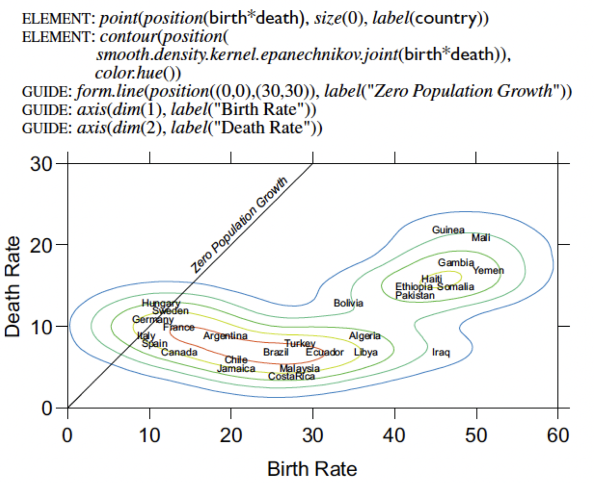
ggplot
ggplot2 implementa essa gramática em forma de camadas:
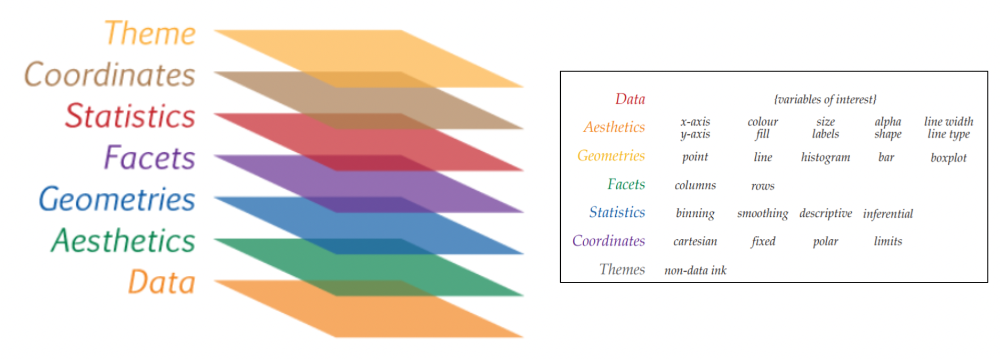ggplot
Iremos ver o passo a passo para chegar a esse gráfico.
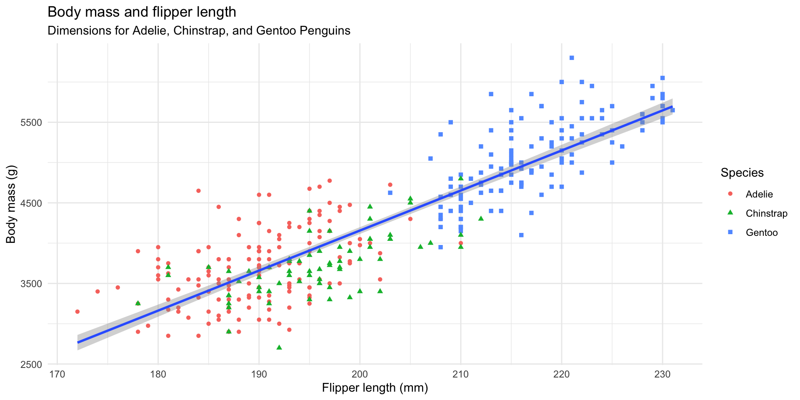ggplot
Rows: 344
Columns: 8
$ species <fct> Adelie, Adelie, Adelie, Adelie, Adelie, Adelie, Adel…
$ island <fct> Torgersen, Torgersen, Torgersen, Torgersen, Torgerse…
$ bill_length_mm <dbl> 39.1, 39.5, 40.3, NA, 36.7, 39.3, 38.9, 39.2, 34.1, …
$ bill_depth_mm <dbl> 18.7, 17.4, 18.0, NA, 19.3, 20.6, 17.8, 19.6, 18.1, …
$ flipper_length_mm <int> 181, 186, 195, NA, 193, 190, 181, 195, 193, 190, 186…
$ body_mass_g <int> 3750, 3800, 3250, NA, 3450, 3650, 3625, 4675, 3475, …
$ sex <fct> male, female, female, NA, female, male, female, male…
$ year <int> 2007, 2007, 2007, 2007, 2007, 2007, 2007, 2007, 2007…ggplot - A função ggplot

ggplot - Mapeando nossos dados
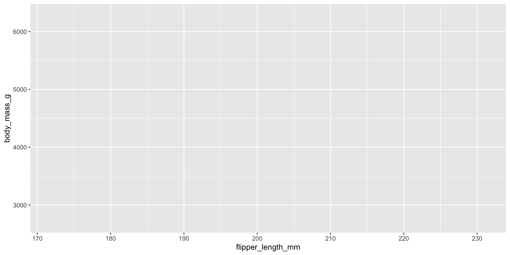
A camada aesthetic
A palavra aesthetic, no nosso contexto, significa “algo que você pode ver”. Cada estética é um mapeamento entre uma sugestão visual e uma variável. Exemplos incluem:
xey: posição (ou seja, nos eixos x e y)color: cor (cor “externa”)fill: preencher (cor “interior”)shape: forma (de pontos)linetype: tipo de linhasize: tamanhoalpha: transparêncialinewidth: espessura (de linha)
ggplot - Adicionando uma geometria

A camada de geometrias
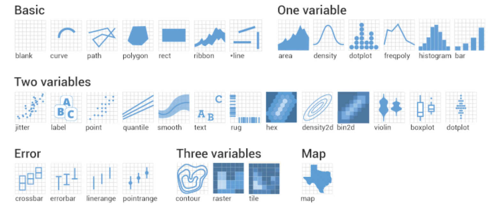ggplot - Adicionando cores
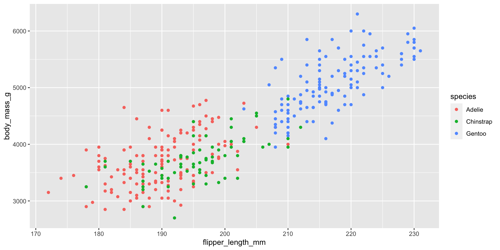
ggplot - Reta de regressão
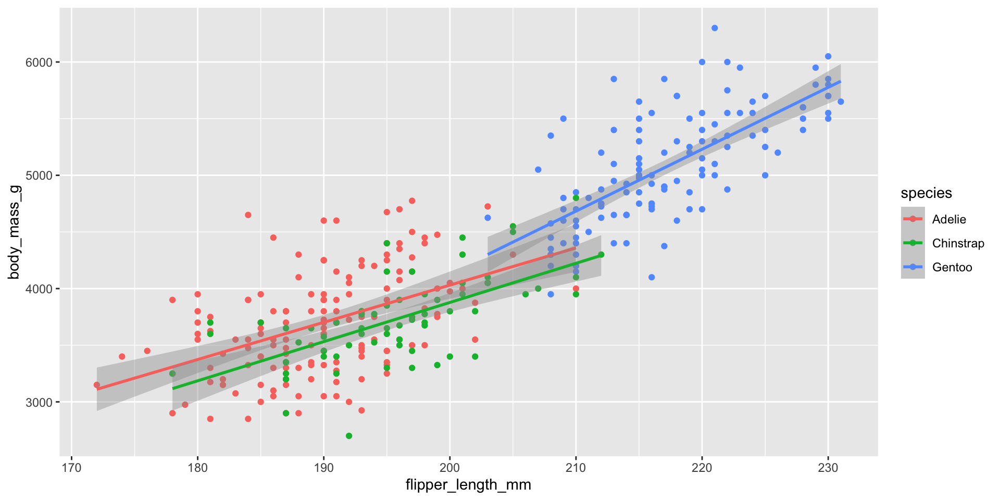
Escopo global vs escopo local
- Quando as aesthetic são definidas em ggplot(), ou seja em nível global, elas são transmitidos para cada uma das camadas de geometria subsequentes do gráfico.
- No entanto, cada função geom no ggplot2 também pode receber um argumento de mapeamento, o que permite mapeamentos estéticos no nível local que são adicionados àqueles herdados do nível global.
- Como queremos que os pontos sejam coloridos com base nas espécies, mas não queremos que as linhas sejam separadas para elas, devemos especificar
color = speciesapenas parageom_point(). - Mais detalhes sobre a relação de aesthetic and geom podem ser vistos aqui.
ggplot - Corrigindo o escopo
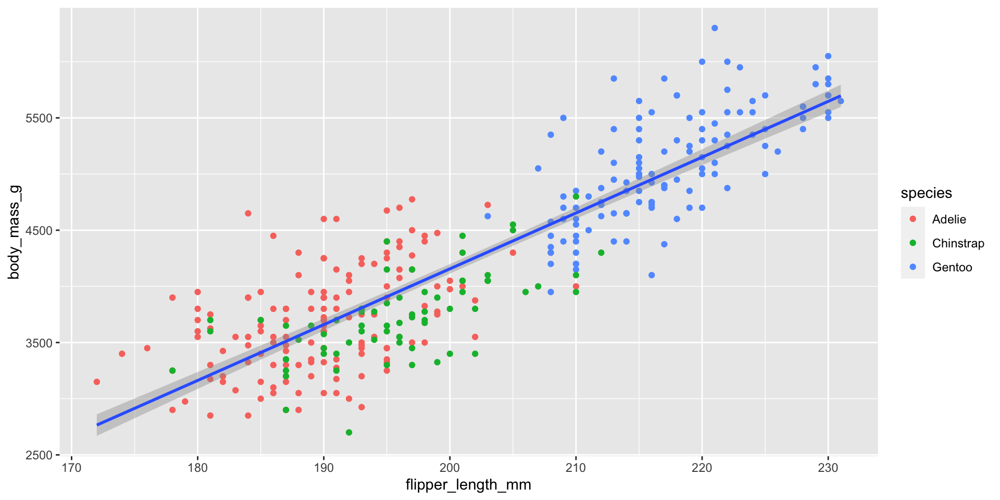
ggplot - Adicionando formas
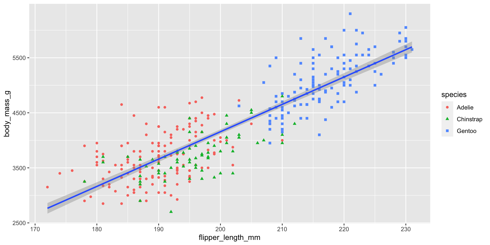
ggplot - Rótulos e Temas
ggplot(
data = penguins,
mapping = aes(x = flipper_length_mm,y = body_mass_g)
) +
geom_point(aes(color = species, shape = species)) +
geom_smooth(method = "lm") +
labs(
title = "Body mass and flipper length",
subtitle = "Dimensions for Adelie, Chinstrap, and Gentoo Penguins",
x = "Flipper length (mm)", y = "Body mass (g)",
color = "Species", shape = "Species"
) +
theme_minimal()Mais temas podem ser vistos aqui.
ggplot - Rótulos e Temas
Visualização de dados
Momento prático II
Motivando a atividade prática
Após seu sucesso em suas primeiras tarefas, a empresa pediu a você parar gerar algumas visualizações para ela.
5ª Tarefa
Com o objetivo de focar melhor na publicidade da próxima campanha, a equipe de marketing deseja saber qual a distribuição das vendas por canal de venda do público-alvo da campanha (clientes que tem uma criança ou um adolescente em casa). Eles desejam ver essa informação em um gráfico de barra.
6ª Tarefa
O time de marketing deseja visualizar a relação entre a renda dos clientes e o total gasto em compras. Eles desejam ver essa informação em um gráfico de dispersão.
Como aprender mais?
Como aprender mais?
- Curso de R via swirl
- Cursos de Data Science Foundations with R no Coursera
- Livro online R for Data Science
- Cursando as disciplinas do curso de Ciência de Dados
Fim!
Obrigado pela participação!